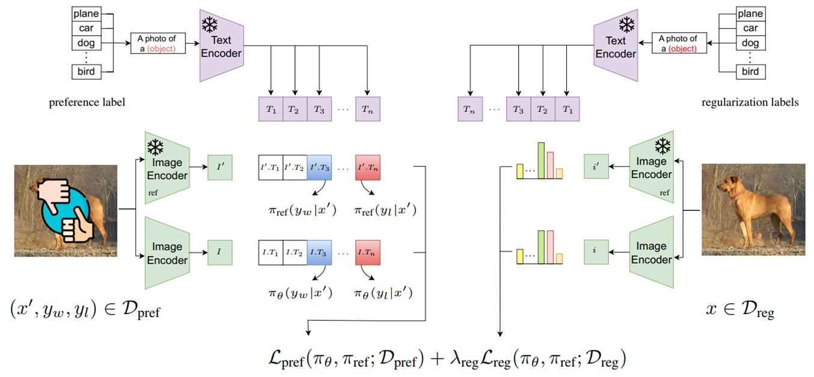

|
Sepehr Kazemi I'm an undergraduate at Sharif University of Technology, Electrical Engineering department. I'm also working as a research assistant at L3S Research Center, working on explainability and bias & fairness in large vision language models. In L3S, I am so fortunate to work with Wolfgang Nejdl, and Ahmet Iscen (Google DeepMind). |

|
ResearchMy general research theme lies at the intersection of machine learning, computer vision, and natural language processing. More specifically, explainability, bias & fairness, language-informed reinforcement learning, knowledge graphs, and commonsense reasoning. |
|

|
LLM for 5G: Network Management
Ali Mamaghani*, Ali Nourian*, Negin Mohtaram*, Alireza Shokrani*, Seyed Mohsen Nasiri*, Sepehr Kazemi Ranjbar*, Alireza Mohammadi, Navid Nikaein, Babak Hossein Khalaj ICMLCN, 2024 The demonstration comprises a user-friendly chatbot, adept at translating everyday English queries into actionable 5G commands, and LLMs serving as generative AIs to dynamically generate configurations tailored to the 5G network environment. |
|
©2024 Sepehr Kazemi. Powered by jonbarron. |